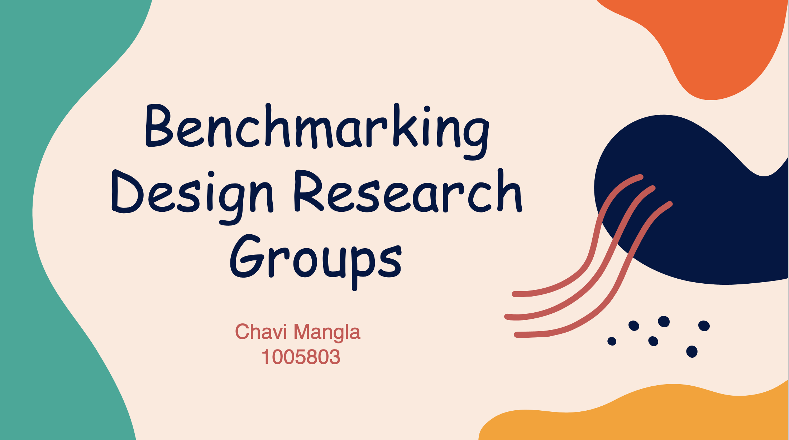

State of Design Education in Singapore
During the project, I conducted an extensive State of the Art literature review, offering insights into the current research landscape. A benchmark study on global Design Research groups was meticulously performed, assessing strengths and areas for improvement. Utilizing Microsoft Office, I engaged in qualitative data analysis, extracting valuable insights. This collective effort allowed me to gain a profound understanding of the research landscape, identify opportunities for SUTD's research group, and propose strategies for enhanced competitive positioning.
For the full presentation, you can view the PDF here.